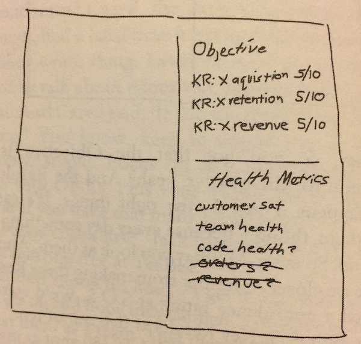

I first read Christina Wodtke's book Radical Focus in April of 2016 and reviewed it in GoodReads, where I gave it 4 out of 5 stars. Our company has just finished a quarter with OKRs, largely driven by this book and on-site coaching by Ben Lamorte. In reflecting on what we did, I decided to re-read Wodtke's book. I like it even more (if GoodReads allowed a score of 4.5 I'd adjust my rating). I think we were successful with OKRs; where we had a few issues, I think we might have heeded more carefully some of Wodtke's tips. So this is a revision of that review. One thing I want to pick out here is the story of product development and engineering in the book: I think that aspect of OKRs is still a bit mysterious. In a later post I want to share some thoughts about Agile and OKRs.
An OKR is a public declaration of a qualitative, inspirational objective, followed by one to three numerical / quantitative key results. The idea was originated at Intel, and is used by some valley companies like Google. I don't think it's as popular on the east coast.
An inspirational O might be something along the lines of "Dominate our market." Ideally the numerical key results should be a stretch (no sandbagging!). For example: Increase units sold by 75%. Or, with more brio, "Slay the market by selling 75% more!" Wodtke advises adding a number between 1 and 10 indicating the confidence one has for reaching the result (1 = no confidence). Since increasing units sold might be a true stretch goal, I might think it only has a 50% chance of being accomplished over the period. OKRs have a time span between some number of weeks and a quarter; Wodtke recommends a quarter. If fully implemented, OKRs start with the executive team and each area underneath writes an OKR that contributes to the "higher" OKR. This process of division can go all the way down to the individual contributor. Wodkte says it's a best practice for OKRs to be developed with input from both above and below in the business hierarchy. The idea that "lower" OKRs contribute to "higher" ones (and that higher ones guide lower ones) is called the cascade.
For example, a product area might say:
Objective: Deliver an amazingly higher quality product
OKRs are reviewed at the end of the period. It is critical that the key results be hard so that the team can learn to be comfortable with lagging the target, so as to set the ground for constant improvement.
The book begins with a narrative of a company called TeaBee which is in chaos and finds that OKRs contribute to getting it on the path to success. This section seems influenced by recent business book narratives like The Goal, The Five Dysfunctions of a Team or The Phoenix Project. For readers who consume information better through narrative, this is a great way to convey the spirit of OKRs.
Then come a number of chapters, including contributed ones, on the nitty gritty. The content here is acceptable, but the book could use (1) many, many more examples. OKRs are hard to think up; an example cascade of OKRs from the executive team down to individuals would be a great help; and (2) the section on OKRs and "performance reviews" is pretty light. (The short answer seems to be: You don't use OKRs for performance reviews. Since this is not stated very emphatically or at length, I fear that OKRs might be misunderstood as a proxy for individual performance. As I understand it, consensus suggests that OKRs can be a starting point for a discussion of performance, but not much more.) (For more examples, take a look at Objectives and Key Results by Paul R Niven and Ben Lamorte.)
Just a few: The short version: Stick to OKR dogma.
That's the end of my review, but let me now try to draw out the tech story.
How does Agile relate to OKRs? I want to talk about this in a later post, but let me extract some details from the book.
Wodtke notes "I'm not an engineer" (p. 113). Indeed, the OKRs defined in the book are mostly around sales, with the understanding that engineering product deliverables roll up to those sales OKRs. Thus on pp. 74-77 "code health" is put under "health metrics" and "code health" has a question mark after it, and isn't really addressed as an OKR on its own in the book. Hmm.

How do engineering product concerns get expressed in the framework? They are identified as priority items for a given week, for example, "P1: Debug order-flow." Here's how this is presented in the story:
"Customer satisfaction is a must," said Jack [the Chief Product Officer]. "Maybe code health? We don't want bad code."
"Bad code can become a problem easily," Raphael [the new CTO] agreed.
"No, look, guys," Hannah [the CEO] interjected. "Code is code, but we are more a relationship business than a tech company. Let's get real. I like the Objective to be around sales, but health of the team, or better yet the bottom line, really seems more important."
Raphael replied, "OKRs are the thing you want to push, the one thing you want to focus on making better. The health metrics are the key thing to continue to watch. Making them the same doesn't make a lot of sense." (p. 75)
I think this is big. You had better have your company figure out what kind of company it is (relationship company? product company?); if you don't your OKRs are not going to make sense, and the cascade is not going to make sense. Meanwhile, in Wodtke's example, there seems to me to be some missing "tissue" between the Sales OKRs and the P1 to "Debug order-flow." Shouldn't product and engineering have its own KRs so they can measure progress? What are they? Should there be some kind of separate organizing principle that organizes the various engineering/product P's that are contributing to the sales OKRs? Where does this planning happen? Is planning required?
Having said that, the narrative section has a telling split between the period before OKRs, and the period after. Before OKRs, the example startup is clearly in waterfall / design up front mode: Development is waiting on the definition of the "bulk order spec" (p. 44). An engineer says "I still haven't gotten the spec," and with nothing clear to do, he's been "making a few adjustments to code" in his free time (p. 51). In the transition to OKRs, the fictional startup gets a CTO. Once that happens, things change. Instead of showing big functionality, engineers show "snippets," and they evolve the database "to allow for an API," which implies, I think, composition, reusability, and smaller deliverables (p. 93). Once work is directed by a CTO and deliverables driven by OKR, we start to read about some steppingstones I associate with agile: "Hanna was excited to view the mocks . . . Seeing the design in various stages of completeness made her realize it was pretty complicated stuff" (p. 93). It's not very directly expressed, but in Wodtke's telling, agile and OKRs go together. It's not that clear if the change in the story from waterfall to agile is owing to a CTO devoted to agile or OKRs.
Then there is a guest chapter by Marty Cagan entitled "OKRs for Product Teams." Cagan says that a common mistake is to define OKRs at the "functional" level, rather than the "product" level (p. 117-118). He's saying: Don't define your OKRs for a functional area such as "design," but define there for the group that delivers something, e.g., the product team that delivers a cluster of features:
Imagine if the engineers were told to spend their time on re-platforming, and the designers on moving to a responsive design, and QA on re-tooling, and so on. While each of these may be worthy activities, the chances of actually solving the business problems that the cross-functional teams were created to solve are not high. What all too often happens in this case is that the actual people on the product teams are conflicted as to where they should be spending their time, resulting in confusion, frustration and disappointing results from leadership and individual contributors alike.
But this is easily avoided.
If you are deploying OKRs for your product organization, the key is to focus your OKRs at the product team level. For the attention of the individuals on their product team Objectives. If different functional organizations (like design, engineering or quality assurance) have larger Objectives (like responsive design, technical debt, and test automation) they should be discussed and priortized at the leadership team level along with the other business Objectives, and incorporated into the relevant product team's Objectives. (pp. 118-119)
So this is very tricky. In my organization, we have a Design Team that definitely has its own prerogatives but also contributes to teams. They had an OKR to improve their pipeline, but also participate in the design goals and implementation for product delivery teams. Meanwhile, what about the parts of your company that are not really devoted to "product" -- Finance, Legal, etc.? So I still think there's some tension here between OKRs for functional areas and for product delivery teams.
Then there's agile. The crux here is that OKRs are organized by quarter, and are about goals. But agile is typically broken down into iterations of, say, two weeks. If OKRs are set with too much emphasis on implementation, they will destroy the agile imperative to be able to respond to change. In short, here are some of the problems your organization is going to face when coordinating top-level OKRs and the work product teams deliver:
More on these topics later . . .